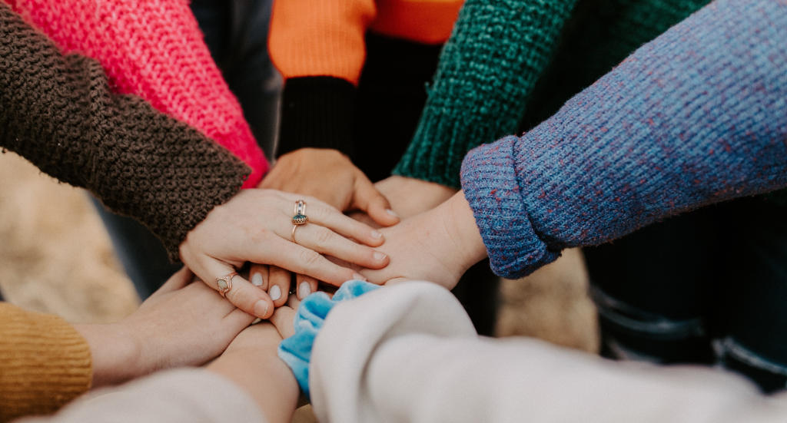

Is Pipius No Si Tocant
Amici, fratelli, cittadini che si aiutano e si sostengono
Chi Siamo
Siamo un'Associazione di Promozione Sociale (RUNTS 92273130929) formata da uomini liberi che collaborano e si supportano di forma solidare, per tutelare il diritto alla vita, salute e dignità specialmente in tempi e situazioni difficili.
Resistiano pacificamente alle violazioni costituzionali ed organizziamo eventi di protesta pacifica e disobbedienza civile. Accogliamo chi condivide il desiderio di lottare per la verità e la libertà senza violenza o discriminazione nel rispetto dei diritti umani.
La nostra sede è in Sardegna, ed il nostro sostegno e impatto si estende su tutta Italia, aiutando il prossimo e trasformando in meglio il modo in cui interagiamo e viviamo.
La Nostra Missione
Iniziative
Siamo impegnati in diverse iniziative umanitarie pensate per sostenere chi ha bisogno. Dalle collette alimentari che portano sollievo, all'assistenza nel cercare un sostegno medico-sanitario umano e rispettoso. Supportiamo anche gli eco-villaggi e la coltivazione di cibo sano in uno stile di vita sostenibile.
E quando necessario organiziamo eventi di protesta pacifica e disobedienza civile nel rispetto dei diritti umani.
Associarsi e Donazioni
Unirsi alla nostra Associazione è un modo straordinario per essere parte di qualcosa di più grande. Con il tuo contributo, piccolo o grande che sia, puoi fare la differenza nelle vite degli altri. Insieme, possiamo realizzare impatti positivi duraturi.
Grazie per essere la forza dietro il cambiamento!
Canali e Gruppi
Segui le nostre attività su Facebook, accompagna le informazioni sul nostro canale Telegram e partecipa nei numerosi gruppi WhatsApp organizzati per aree tematiche e regionali.
Unisciti a noi, condividi idee e ispirazioni, perché insieme possiamo costruire un impatto positivo.